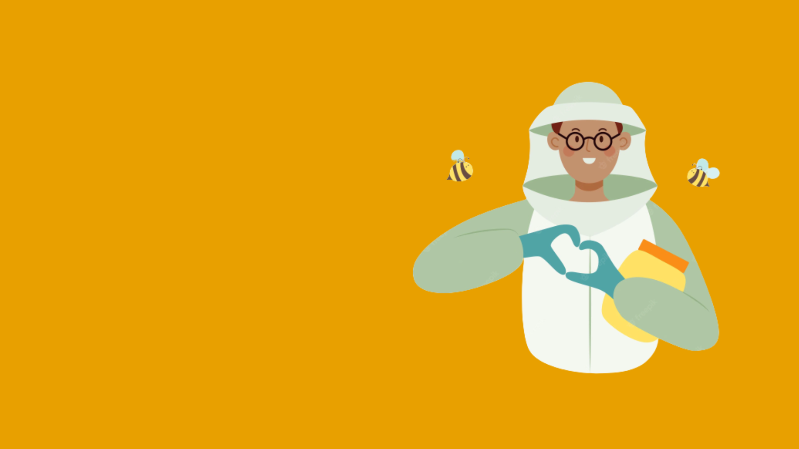
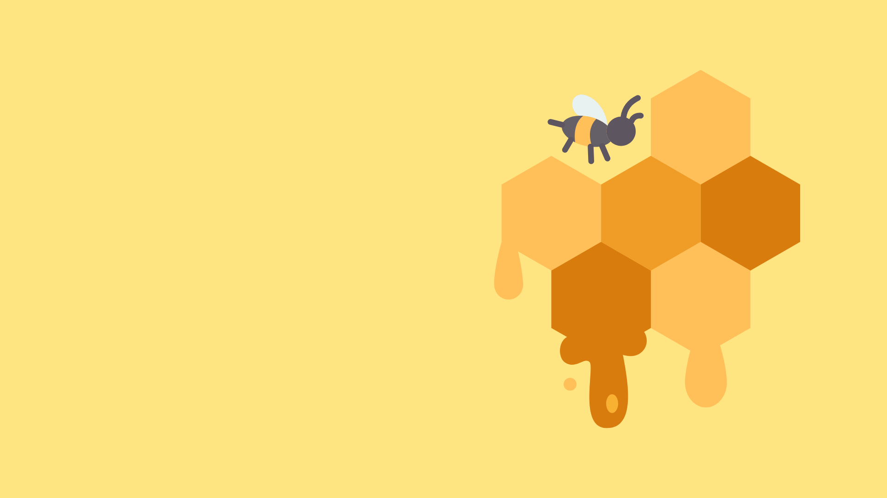
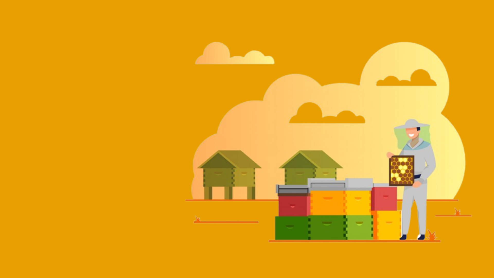

1- O Controle a alimentação das abelhas de forma automática, sem a necessidade de que o apícultor se locomova diariamente até o apiário.
2- Controlar a quantidade de alimento recebidos pelas abelhas por meio de um aplicativo.
3- Consultar o tempo em que este alimento é consumido
4- Classificar a colmeia em: forte e fraca de acordo com sua ingestão deste alimento.
5- Disponibilizar uma aba dentro do app que ensine sobre os cuidados necessários para manter saúde das abelhas.
6- A forma correta de manusear os nossos equipamentos.